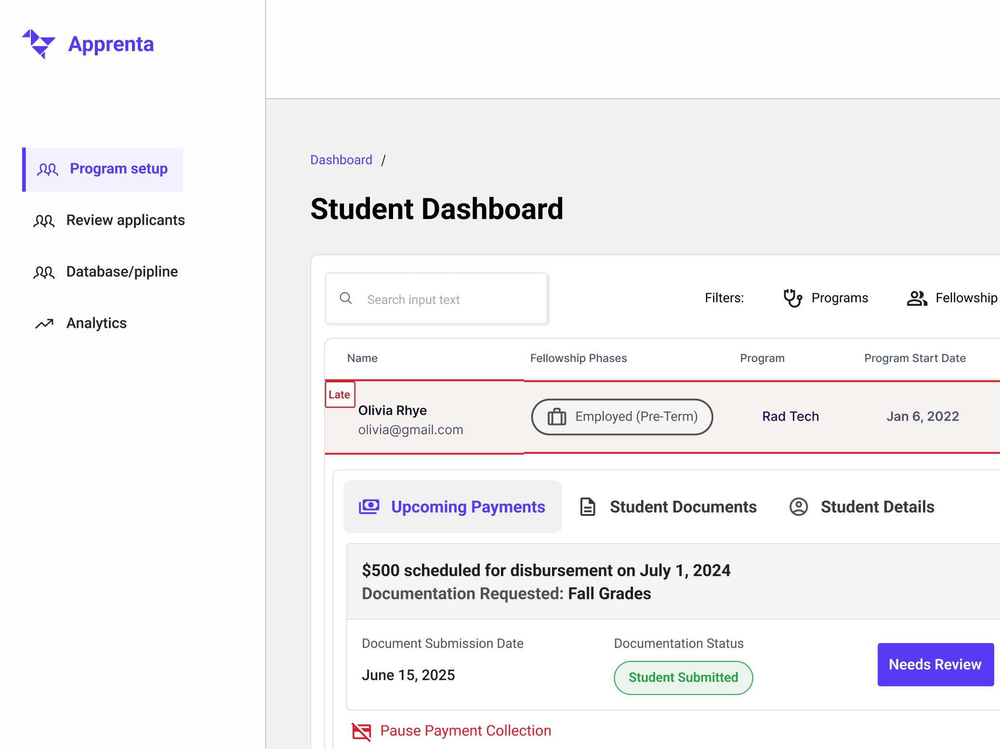

Internship 🌳
BCG
July 2025 - December 2025Designed AI tools for 9,000+ consultants and led global research shaping BCG’s GenAI product strategy.
Product designer @ Solace
Based in San Fransico
Designed AI tools for 9,000+ consultants and led global research shaping BCG’s GenAI product strategy.
Designed a PMS for boutique hotels, unifying fragmented operations with AI-powered automation.
Built a community app for South Asian cinema fans, managing end-to-end design across 4 designers

Created admin tools managing scholarship distribution across hospitals and aspiring healthcare workers.